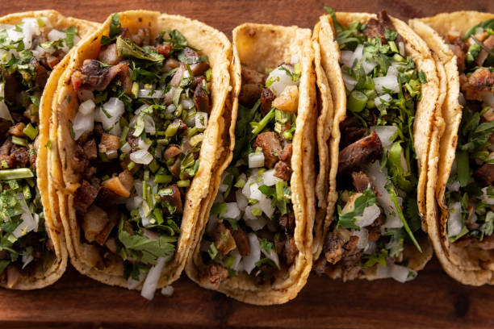

Taco Recipe

Recipes Home
Description
Ingredients
- ground beef
- taco seasoning
- onion
- sour cream
- black beans
- tortillas
- cheese
- lettuce
- tomatoes
- guacamole
- chili powder
Steps
- Prepare the toppings
- Chop the tomatoes
- Make the salsa
- Make the guacamole
- shred the cheese
- chop the onion
- Brown the meat in a pan
- Season the meat
- Drain the meet
- Add chili powder
- Add meat to taco shells
- Add desired toppings